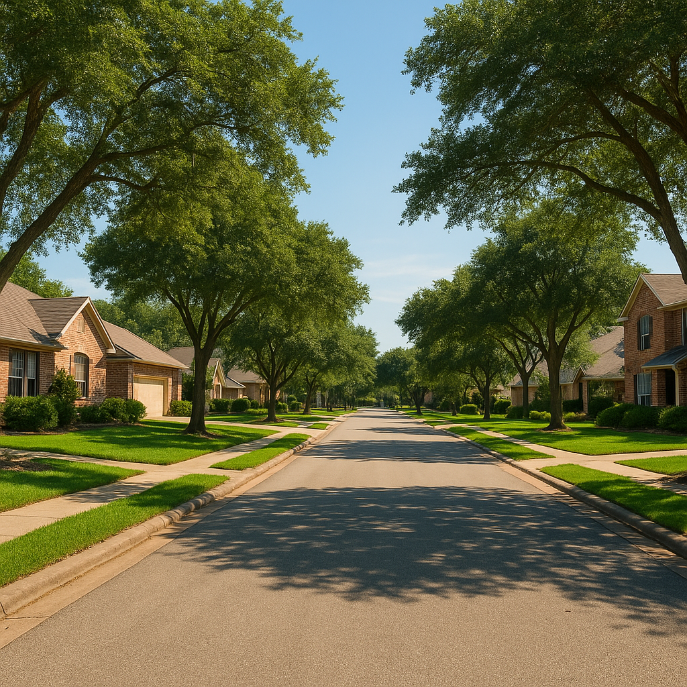

I'm Bond Peter Njoku (NMLS #2670329), and one of the most common mistakes I see buyers make is assuming an entire city is either "in" or "out" for USDA. It's not that simple — USDA eligibility is drawn on a map at the address level, and a home three streets apart can fall on opposite sides of the line. Forney, Royse City, and Terrell are three of the strongest USDA markets I work in East DFW, but each has boundaries worth knowing before you start touring homes.
Which parts of Forney TX (75126) are USDA-eligible?
Forney sits in Kaufman County and has grown fast over the past decade, which puts parts of it at risk of future USDA reclassification as population density increases. As of 2026, the majority of Forney's 75126 zip code — particularly newer subdivisions on the northern, eastern, and southern edges of the city — remains USDA-eligible. The older, denser core near downtown Forney is more likely to sit outside the eligible boundary. Because Forney has grown quickly, I check every Forney address individually rather than assuming based on a prior client's approval.
Which parts of Royse City TX (75189) are USDA-eligible?
Royse City, in Rockwall County, is one of the more consistently USDA-eligible markets I work in — its population growth hasn't yet pushed it past USDA's rural threshold, and the vast majority of the 75189 zip code qualifies in 2026. This makes Royse City a strong first stop for buyers who want USDA's zero-down financing without worrying as much about hitting an eligibility boundary mid-search.
Which parts of Terrell TX (75160) are USDA-eligible?
Terrell, also in Kaufman County, is broadly USDA-eligible across most of its 75160 zip code in 2026, with the main exception being its small historic downtown core. Terrell has become a strong option for buyers priced out of Forney's rising home values, since its median prices run lower while carrying similar USDA eligibility odds.
| City | Zip | County | 2026 Eligibility Pattern |
|---|---|---|---|
| Forney | 75126 | Kaufman | Mostly eligible; older downtown core excluded, verify address |
| Royse City | 75189 | Rockwall | Broadly eligible across most of the zip code |
| Terrell | 75160 | Kaufman | Mostly eligible; small historic downtown excluded |
Note: This is a general pattern, not a guarantee for any specific address. USDA eligibility must be verified property by property against the current USDA Rural Development map before writing an offer.
How do I check if my specific address is USDA-eligible?
USDA maintains a public eligibility map tool that checks any address against current boundaries. I run this check for every USDA client myself before we tour a home — it takes about 60 seconds and removes the guesswork. If I'm working with a buyer who's house-hunting in Forney, Royse City, or Terrell, I'll check candidate addresses in real time as listings come up, so eligibility is never a surprise at contract time.
What happens if an area loses USDA eligibility?
USDA periodically re-evaluates rural designations based on updated census and population data, and areas that were once eligible can be reclassified out as a community grows — this has happened in parts of fast-growing DFW suburbs before. If you already closed on a USDA loan before a reclassification, your loan is unaffected; the change only applies to new originations going forward. This is exactly why timing matters if you're targeting a fast-growing edge of Forney — eligibility today isn't guaranteed to last indefinitely.
A recent Kaufman County example
I worked with a buyer last spring who was set on a specific new-construction section in Forney, about a mile from a home her sister had bought with USDA financing two years earlier. When I checked the current map, that particular section had shifted just outside the boundary as Forney's population grew — her sister's old address still qualified, but the new build didn't. We pivoted her search six minutes east into Terrell instead, found a comparable new-construction home, and she closed with zero down.
Frequently Asked Questions
Is Forney TX 75126 USDA-eligible in 2026?
Most of Forney's 75126 zip code, particularly the areas outside the older, denser town center, qualifies as USDA-eligible in 2026, since it falls within Kaufman County's designated rural and suburban service area. Newer subdivisions on Forney's outer edges are almost always eligible. I'm Bond Peter Njoku (NMLS #2670329) — call or text 469-545-7180 and I'll check your specific address on the current USDA map.
Is Royse City TX 75189 USDA-eligible in 2026?
Yes, Royse City's 75189 zip code in Rockwall County is broadly USDA-eligible in 2026. Royse City is one of the more reliably eligible communities I work in because it hasn't crossed the population threshold that triggers USDA re-designation. I'm Bond Peter Njoku (NMLS #2670329) — call or text 469-545-7180 to confirm your exact address.
Is Terrell TX 75160 USDA-eligible in 2026?
Yes, Terrell's 75160 zip code in Kaufman County is USDA-eligible in 2026, including the majority of the city outside its small historic downtown core. Terrell is a strong USDA option for buyers priced out of Forney's rising home values. I'm Bond Peter Njoku (NMLS #2670329) — call or text 469-545-7180 and I'll verify your target property.
What happens if an area loses USDA eligibility?
USDA re-evaluates eligible areas periodically based on population growth and census data — an area that was eligible can be reclassified as ineligible if it grows past USDA's rural population threshold. If you're already in a USDA loan when that happens, your existing loan is unaffected; it only impacts new originations in that area going forward. This is one reason I always verify current-map eligibility right before closing, not just at the start of a search. I'm Bond Peter Njoku (NMLS #2670329) — call or text 469-545-7180.
Let's check your exact address before you tour
I'm Bond Peter Njoku (NMLS #2670329). I check USDA eligibility on the current map for any Forney, Royse City, or Terrell address myself, at no charge, usually within the hour. Call or text me at 469-545-7180, message me on WhatsApp, or start your pre-approval online.